The ConceptBase.cc User Interface consists of two main applications:
The interface is based entirely on Java, so it should be usable on all platforms with a compatible Java runtime environment. The Java interface includes a graphical browser and editor. Both CBIva and CBGraph can be used as stand-alone Java application.
CBIva is a textual interface to a CBserver, which emphasizes the use of the frame syntax of Telos. You can start the CBIva workbench by the command
cbiva
The command will start a script file with the same name. We assume that the installation directory of ConceptBase.cc1 is added to the search path of executable programs. After a few seconds, the CBIva main window should pop up. Figure 8.1 shows the main window connected to a server and gives a short description of the buttons in the tool bar.
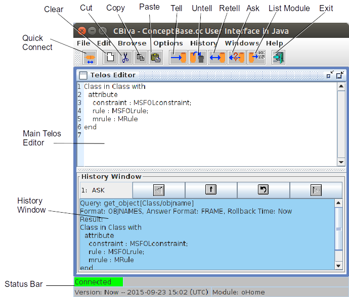
Figure 8.1: Main Window of CBIva
The main window consists of a menu bar, a tool bar with a button panel, the area for subwindows and a status bar. The first sub window (Telos editor) contains the history window, which records all operations for later reuse. In the following, each component of the user interface is explained.
The tool bar is the button panel below the menu bar. All buttons have tool tips, i.e. small messages that show the meaning of these buttons. The tool tips appear, if you move your mouse pointer over the button and do not move your mouse for about one second. The buttons are shortcuts for some operations that are frequently used and are also available in the menu. The operations apply to the Telos Editor which has currently the focus.
The preferred way to start a CBserver from CBIva is to use the ’Start CBserver’ from the File menu. It provides an output window for the trace messages of the CBserver, but this window is only visible if the trace mode is set to ’minimal’ or higher. Disconnecting from the CBserver will not stop it. It has to be stopped explictly or CBIva will stop it if it is shut down itself. The ’Quick Connect’ button of the toolbar provides a simplified way to start a local CBserver. It does not ask for CBserver parameters. Instead, the default values are used for all parameters except that the server mode is set to ’slave’ and multi-user mode is disabled. This causes the CBserver to shutdown whenever the last connected client disconnects from it.
You can move the tool bar outside the main window or display it in vertical form, if you click on the leftmost area of the tool bar and drag it to another place.
The status bar contains some fields that display general information about the status of the application.
The field for the current version shall display the current time if the version is set to ’Now’. If set to a rollback time in the past, it displays both the version name and the time associated to the version. It will then also hight the background of the text field to make the user aware that queries are evaluated against a past state of the database.
The Telos Editor is an editable text area, where you can edit Telos frames. The operations can be executed from the menu bar or the buttons in the tool bar. Furthermore, the text area has a popup menu on the right mouse button with the following items.
If the Telos editor window is empty, then you can drag and drop Telos text files (file type *.sml or *.sml.txt) into it. CBIva will open the file and paste the content into the Telos editor window. This function requires that the option ’Show Line Numbers’ is enabled (see section 8.1.1). You can also drag and drop URLs pointing to publicly accessible Telos text files.
The text in the Telos editor window is typically a sequence of Telos frames. When you press the ’Tell’ button, the text is sent to the CBserver and processed there by the ’TELL’ method of the CBserver. This is a single transaction which may fail or succeed.
You can use the string "{---}" in the text window to indicate that the frames should be told in multiple transactions. Consider the example:
Shop in Class end
Guest in Class with
attribute
dept: Shop
end
{---}
GuestEmployee in Class isA Guest,Employee end
Activating the ’Tell’ button instructs CBIva to split the text into two parts and tell them in two separate transactions to the CBserver. This feature is useful when some parts contain meta formulas (see section 2.2.9) that first need to be compiled before they are used in subsequent parts of the whole text. If you do not use meta formulas, then you can omit this feature.
The history window is part of the main Telos editor. It stores all operations and their results, so that they can later be used again. The buttons scroll the history back or forward, copy the text into the Telos editor or redo the operation in the history window (see figure 8.2). If the current operation is an “ASK”, then a single click on the copy-button will copy the query to the Telos Editor, and a double click will copy the result of the query. The size of the history window can be reduced by using the slider bar between the Telos editor and the history window.
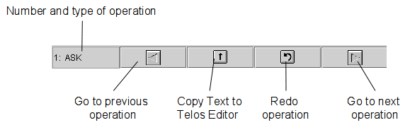
Figure 8.2: Buttons of the History Window
This dialog displays the instances of a class. The class is entered in the text field. When you hit return or press the “OK” button, the instances of this class will displayed in the listbox.
If you double click on an item in the listbox, the instances of this item will be displayed. The frame of a selected item can be loaded into the Telos editor by clicking the “Telos Editor” button. A history of already displayed classes is stored in the upper right selection list box. The “Cancel” button closes the dialog.
The Frame Browser (see figure 8.3) shows all information relevant to one object in one window. The window contains several subwindows with list boxes that show super- and subclasses, the classes, the instances, attributes and objects refering this object. In the center of the window, a small window with the object itself is shown. To view the attributes of the object, you must first select the attribute category in the subwindow “Attribute Classes”.
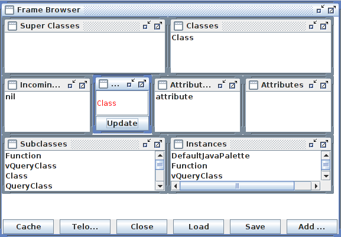
Figure 8.3: Frame Browser
The Frame Browser can be used with and without a connection to a CBserver. If it is not connected, it retrieves the information out of a local cache, which can be loaded from a file by using the “Load” button. The file has to be plain text file with Telos frames. All objects in the cache can be saved into a text file as Telos frames with the “Save” button. The contents of the cache can be viewed with the “Cache” button. The result of a query can be added to the cache by using the “Add query result” button.
The button “Telos Editor” inserts the Telos frame of the current object into the Telos Editor.
This dialog displays all visible queries6 stored in the current object base (see figure 8.4). From the list box, you can select a query and “ask” it or load its definition into the Telos editor.
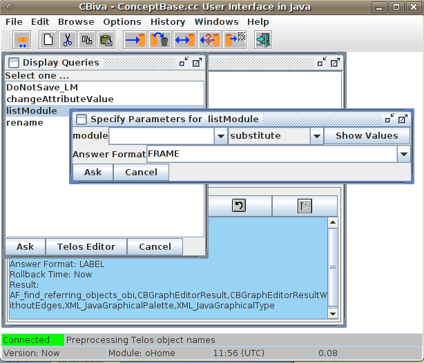
Figure 8.4: Display queries dialog
If you “ask” a generic query class with parameter, another dialog will ask you to specify the parameters. For each parameter, you can specify whether the value entered should be used as “substitute” for the parameter or as a “specialization” of the parameter class (see section 2.3). You can select a value for the parameter from the drop-down list if you have clicked on the “Show Values” button. Note that this list might be very long. Especially for the predefined queries it usually returns all objects in the database as any object can be used as a parameter for these queries.
This dialog is similar to the previous dialog but displays instances of Function. Note that functions are formally special queries. Consequently, the dialogs for functions and queries are pretty much the same. The separation into two dialogs serves quicker handling.
The Query Editor (see figure 8.5) allows the interactive definition of queries. The name of the query is entered in the upper left text field, the super class in the upper right field. After you have entered this information, the list box “Retrieved Attributes” will be filled with all available attributes.
Now, you can select the attributes you want to have in the result. For selection of more than one attribute, you must press the CTRL key and select the attribute with a mouse click at the same time. All attributes can be deselected by the popup menu.
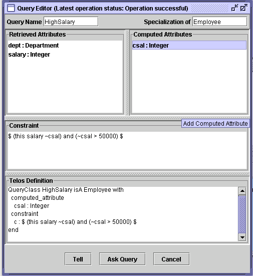
Figure 8.5: Query Editor
In the right listbox you can add computed attributes. The right mouse button brings up a popup menu, which lets you add or delete an attribute.
In the text area below the two list boxes, you can add a constraint in the usual CBQL syntax. The constraint must be enclosed in $ signs.
The text area below, shows the Telos definition of the query and is updated after every change you have made. If your query is finished, you can press the “Ask query” to test the query, i.e. it is told temporarely and the results are shown in separate window. If you are satisfied with the result you can press the Tell button to store the query in the object base.
The Tree browser (see figure 8.6) displays the super classes, classes and attributes of an object in a tree. To start the tree browser, you must mark an object in the Telos editor and select the item “View Object as Tree” from the popup menu or the Edit menu.
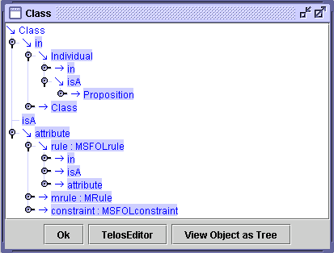
Figure 8.6: Tree Browser
To expand an item, just double click on the icon. If you mark an object name in the tree, you can load into the Telos editor with the “Telos Editor” button or open a new tree browser with the button “View Object as Tree”.
The CBGraph Editor is an advanced graphical modelling tool that supports the browsing and editing of Telos models. It supports user-definable graphical types, i.e. objects may be visualized by dedicated graphical layouts. In addition to predefined graphical types, the user can add his/her own graphical types by modifying and adding certain objects in the knowledge base. Furthermore, the standard components can be replaced by own classes implementing specific application-dependent behaviour.
In the following, we first give an overview of CBGraph application and then present the main components and functions of CBGraph. Details about the use of graphical types can be found in Appendix C. An example for the definition of graphical types of the Entity-Relationship model is given in Appendix D.2.
The CBGraph Editor is entirely written in Java. It can therefore be used on any platform with Java 1.4 or compatible successors of Java 1.4. CBGraph is integrated with CBIva, i.e. Telos frames of objects shown in CBGraph can be loaded directly into a Telos editor and vice versa. CBGraph allows to open several ’internal windows’ in its main window. Each internal window has a separate connection to a CBserver. Thus, within a CBGraph you can establish multiple connections to the same CBserver or even to different servers.
The communication with the CBserver is done using pre-defined ConceptBase.cc queries and a special XML-based answer format. CBGraph requests information about the objects (names, attributes, etc.) but also about their graphical type.
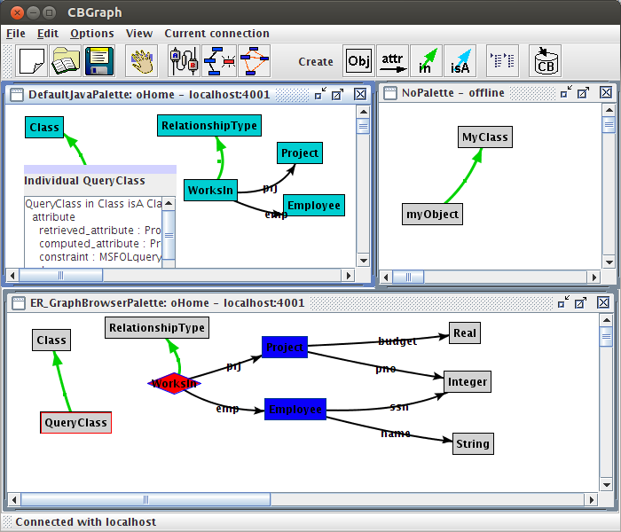
Figure 8.7: CBGraph with three internal windows
Figure 8.7 gives an overview of the CBGraph Editor. Three internal windows have been opened, the two windows on the left have been connected with the same server running on “localhost”, port 4001. The small window in the upper right corner is not connected to a server, but a few objects have been created. The title of the internal windows displays the graphical palette and the current module (if connected to a ConceptBase server) plus the connection status (either ’offline’ or the hostname and portnumber of the ConceptBase server). The content of an internal window is a graphical view on the database module of the ConceptBase server it is connected to. It is possible that different internal windows connect to different ConceptBase servers, though this is not a typical use of CBGraph. If you start CBGraph from CBIva, then you can only start a single instance of it. However, you can start any number of CBGraph instances via the ’cbgraph’ command (see below).
The two left internal windows of figure 8.7 are connected to the same server and show the same model but in different representations. This is caused by the fact, that for the upper window, the default graphical palette has been chosen, and for the lower window, a customized graphical palette specifically designed for the ER model has been selected (see appendix D.2 and C).
Furthermore, you can notice that the object “QueryClass” is represented by two different components. In the upper view, the detailed component view has been activated by a double-click on the object. It shows the Telos frame of the object. By a double-click on the title bar of this component, one can switch back to the default view of this object. Thus, each object can be shown by a small component (the default view) and a large component which gives more detailed information. Components are in this context specific Java objects, namely instances of javax.swing.JComponent. Thus, different components can be provided to represent an object (e.g., tables, buttons, text fields). You can implement your own component and integrate into CBGraph by extending a specific Java class. Details about the customization of CBGraph using graphical types and other components can be found in appendix C.
CBGraph can be used to edit Telos models (see section 8.2.9). It can also display implicit relationships between objects, which have been derived by rules or Telos axioms. For each type of relationship (instanstation, specializations, and attributes), one can choose to see only the explicit relationships or to see all relationships.
CBGraph can be invoked from CBIva via the menu item Browse → Graph Editor. If CBIva is connected with a CBserver, CBGraph will be connected to the same server and you will be prompted to enter the object name you want to start with, the name of a graphical palette, and the database module. The graphical palette is a Telos object which represents a set of graphical types which will be used to visualize Telos objects (see Appendix C). On startup, CBGraph retrieves all information about the graphical types from the CBserver. If CBIva has no connection with a server, CBGraph will be started without a connection and no internal window will be opened within CBGraph.
The connection to a CBserver can also be established via the File / Connect menu. The dialog box has two tabs. The first is for providing the host and port number number of the CBserver. The second is for providing the start object (default "Class") to be displayed, the graphical palette (pick from a list), and the database module (default "oHome").
The most comfortable way to start CBGraph is to double-click the graph file. It is equivalent to starting it via the command
cbgraph graph.gel
To do so, you need to configure your desktop according to the instructions at link.
You can also start CBGraph as a stand-alone utility. The command
cbgraph [options]
will start an unconnected graph editor. You can interactively connect it to a running CBserver and open new windows to display graphs. More interesting is the use with a stored graph file, or several graph files, resp.:
cbgraph [options] filename [filename ...]
The format of the graph file is called Graph Editor Layout (GEL). It stores not only the layout of nodes and links but all other data necessary to edit the graph objects. In particular, it contains connection details of the CBserver module from which the graph was created.
The are a few options for the ’cbgraph’ command synchronizing the data stored in the graph file with the CBserver:
If you provide a filename (or several), then it must have been previously created by another graph editor, e.g. a graph editor started via CBIva. The above command will then display the graph stored in the graph file in an internal window and attempt to connect to the same CBserver that was active when the graph file was created. Hence, the graph file is a materialized view on the CBserver database that is visualized with ’cbgraph’. You edit a graph file with ’cbgraph’ like you are editing a drawing with a drawing tool. The only difference is that the graph is linked to the database.
If the CBserver module specified in the graph file is not accessible, the graph is still opened and you can edit it. You can then however not commit changes to the database or add new objects from the database. The CBGraph editor displays the connection status in the title of its internal window containing the graph. The hostname of a CBserver in a graph file is by default ’localhost’. Consequently, the graph editor will try to establish a connection to a CBserver running on localhost. If you want to connect to a remote CBserver, then you should specify in CBIva the full domain name of the CBserver, e.g. ’myhost.acme.com’. This long name will then be stored in the graph file that is created from a graph editor started via CBIva. Such graph files can then be copied to other computers and can be loaded with CBGraph to auto-connect to the remote CBserver specified in the graph file, provided that CBserver is running and accessible.
If no CBserver is accessible, CBGraph will attempt to start a local CBserver in the background provided that the graph file specifies "localhost" as hostname and the graph file contains module sources. In other cases, CBGraph switches to the offline mode. You can still change location and size of the graphical elements and store it back to the graph file. But you cannot delete objects and you cannot add objects to the database. The menus to show attributes, instances, and subclasses shall also not work.
An example on how to create and use graph files containing materialized database views is available in the CB-Forum at link.
You can use the command line argument ’-host’ to override the hostname and portnumber encoded in the graph file. Assume a graph file ’graph1.gel’ was created from a a CBserver connection at ’localhost:4001’. Then, loading this graph file in a subsequent call will also connect to ’localhost:4001’. If you want to use another CBserver, e.g. running on ’myhost.acme.com:4002’, then call CBGraph from the command line as follows:
cbgraph +rw -host myhost.acme.com:4002 graph1.gel
Note that the CBserver must be running at the remote location before you enter the above command. When you subsequently save the graph file, it will have ’myhost.acme.com:4002’ encoded as its connection. The redirection also works in the reverse direction. So, assume that the graph file ’graph2.gel’ was created for a connection at ’myhost.acme.com:4002’. Then, the following command will redirect the connection to localhost:
cbgraph +rw -host localhost graph2.gel
The default port number is 4001. If no CBserver is running at ’localhost:4001’, then CBGraph shall start it in the background. Note that local CBservers can currently only be started on Linux hosts.
All explicit information is a proposition in ConceptBase (see section 2.1), including attributes, specializations and instantiations. You can move objects in the graph editor by pointing the cursor to the object’s label and then dragging it while keeping the left mouse button pressed. If a graph has many nodes and edges, then it is recommended to first click once on the node or edge to be dragged and then to drag it. This will switch off the anti-aliasing while dragging and thus be faster.
You may also want to select a group of objects and then move it as a whole. To do so either span a selection box with the left mouse button around the object to be selected, or press the "shift" key and select multiple objects individually. After a move, CBGraph shall redraw dependent edges that might be misplaced.
Some edges like instantiation links have no label in CBGraph, depending on the graphical type associated to it (see appendix C). In such cases, a small square dot is displayed on the edge. Click on this square dot to select the edge and to drag it. If the edge has a background color (see appendix C) different from the edge color, then the square dot is drawn in the background color.
Moving nodes and edges can sometimes lead to quite messy edge curves where the edge middle point is distant from the middle of the straight line between the source and destination of the edge. You can clean up such graphs by pressing the "shift" and "control" keys together and then click on a node whose edges shall be straightened.
The menu bar provides access to the most important functions of CBGraph.
If the graph was loaded from a GEL file and it was edited in the session, CBGraph shall ask the user whether to save the edited graph to the file when the user terminates CBGraph.
The operations in this menu have an effect on the selected objects. You can select an object by clicking on it with the left mouse button. Multiple selection is possible dragging a rectangular area while holding down the left mouse button or by holding the Shift-key and clicking on objects.
The options will be stored in a configuration file (see section 8.4) when you exit CBGraph.
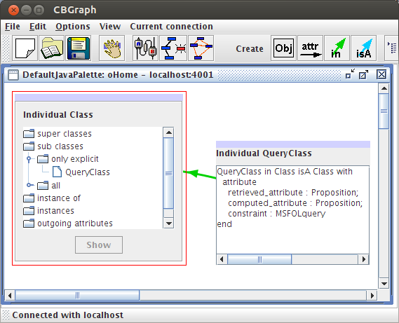
Figure 8.8: Component view of Telos objects: tree and frame
If an object is displayed in component view, one can switch back to the node view by double-clicking its title section.
CBGraph has an experimental layout algorithm that may be useful to reorganize the layout of a complex graph. The heuristic of the layout algorithm is rather simple and does not minimize link crossings.
These operations have effect on the current connection, i.e. the connection of currently activated internal window.
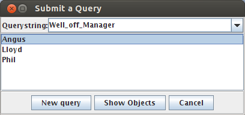
Figure 8.9: Query dialog
The tool bar (see figure 8.10) consists of a set of buttons that are mainly short cuts for some menu items. The right half of the tool bar provides buttons for the creation of Telos objects.
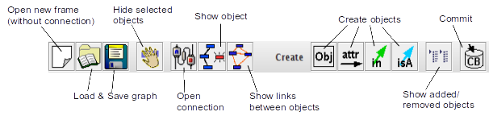
Figure 8.10: Tool Bar of CBGraph
$CB_HOME/lib/classes/cb.jar).
The popup menu is activated by a click on the right mouse while the cursor is located over an object.
CBGraph supports also the creation and deletion of Telos objects. A Telos object in the context of CBGraph is a proposition as described in chapter 2. As described there, there are four types of Telos objects:
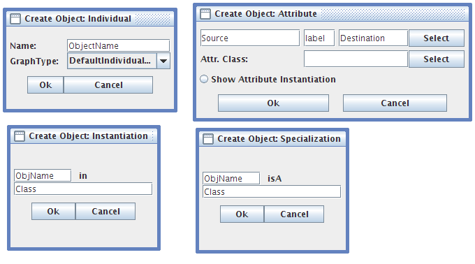
Figure 8.11: Create Object dialogs for Individuals, Attributes, Instantiations, and Specializations
For each object type, we provide a dialog to create this object type as shown in figure 8.11. This dialog is opened by clicking on one of the “Create” buttons in the tool bar, or by selecting an “Add ...” item from the popup menu (e.g, “Add instance” or “Add subclass”). If there are some objects selected in the current internal window, then the object names of these objects will be inserted into the text fields of the dialog in the order they have been selected (i.e., the first text field will contain the name of the object which has been selected first). Furthermore, if you move the cursor into a text field in the “Create Object” dialog and select an object in the graph, then the name of this object will be inserted into the text field.
As changes might lead to a temporary inconsistent state of the database, we do not execute the changes directly on the database. They are stored in an internal buffer in CBGraph and executed when you hit the “Commit” button in the tool bar.
If you have specified the attribute category, you can also select the attribute value from a listbox by clicking on the “Select” button next to the text field for the attribute value. The listbox will show all instances of the destination of the attribute category (e.g. all instances of Department for the category Employee!dept).
If you select the radio button “Show Attribute Instantiation” then CBGraph will also show the instantiation link for the attribute. For example, if you create a new attribute for John with the label JohnsDept in the attribute category Employee!dept, then the instantiation link between John!JohnsDept and Employee!dept will also be shown. As the graph gets quite confusing with too many links, this radio button is not selected by default.
Deletion of objects is also possible. As this operation should not be mixed up with the removal of an object from the current view, this operation is just available from the popup menu (item “Delete Object from Database”).
As you might make mistakes while editing the model, there is the possibility of undoing changes. The button “Show added/removed objects” list all objects that have been added or removed (since the last succesful commit or since the connection has been established). A screenshot of the dialog is shown in figure 8.12. The left list shows the objects that have been added, the right list shows the objects that have been removed. By clicking on the button “Re-Insert/Delete” object, the selected objects will be re-inserted in or deleted from the graph 8.
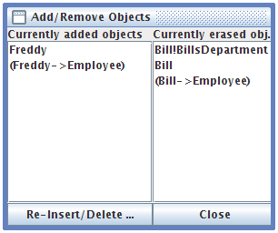
Figure 8.12: List of objects which have been added or removed
If you are satisfied with the changes you have done, you can click on the “Commit” button. Then, CBGraph will transform the objects to be added or removed into a list of Telos frames and send them to the server using the TELL, UNTELL, or RETELL operation. If the operation was successful, all explicit objects will be checked if they are still valid and if their graphical type has changed (as in the “Validate and update” operation from the “Current Connection” menu). If there is an error, the error messages of the server will be displayed in a message box. The internal buffer with the objects to add or remove will be not changed in this case.
To improve the performance of CBGraph, several caches are used. On the other hand, the use of a cache causes several problems which will be addressed in this section. In particular, the caches of CBGraph are not updated automatically if the corresponding data in the server is updated.
Graph files (extension ’gel’) are binary files that store the current state of a graph displayed in CBGraph. Since they are constructed from a ConceptBase database, they are a (materialized) view on the database. The view consists of the nodes and links displayed in the window, their positions, their graphical types, the hostname, portnumber and module from which the graph was created, the size of the window, its background color and image, and the window’s zoom factor. You can thus save the current state of your graphical view in the gel file and load it in a subsequent session with CBGraph to continue editing it, much like with a drawing tool.
The graph file stores serialized Java objects in the following sequence
String title of the internal frame
Dimension size of the graph editor
Dimension size of the internal window
Dimension size of the drawing area of the internal window
Integer number of nodes (incl. edge objects)
{ node1
Rectangle bound of node1
node2
Rectangle bound of node2
...
}
Integer number of edges
{ String source node of edge 1
String node object on the edge 1
String destination of edge 1
String source node of edge 2
String node object on the edge 2
String destination of edge 2
...
}
Color background color
Float zoomfactor
String hostname
String port number
String module context as absolute path
String long title of the graphical palette
String name of the graphical palette
Integer saveflag (bit0: HAS_IMAGE, bit1: HAS_SOURCE)
IF HAS_SOURCE
{ String saved modules e.g. "mod1-mod2"
{ String source of module 1
String source of module 2
...
}
}
IF HAS_IMAGE
{ PNG image of the background image
}
Since edges are also objects in Telos, the nodes stored in the graph file include the edge node that represents the edge itself. The graph file stores complex information about the nodes including the graphical types of the nodes, their dimension and location. By default, the graph files stores the Telos module sources needed to manipulate the graph. The graph file stores the sources of all modules that are on the path from the root module System to the current module (the module that is active when the graph file is saved). The module System is not saved since it is typically not updated. Note that ConceptBase database can include a tree of module (see section 5.3). Hence, a graph file does in general not store the Telos sources of the complete database. If you create graph files for all leave modules of a database, then the combination of the graph files is completely containing the database as sources models. The extraction of Telos sources uses the builtin query listModule (see section 5.8). This is in most cases a faithful listing. However, there are rare cases when the extracted cannot be told to a CBserver. For example, if a module contains deductive rules that are essential for satisfying integrity constraints for objects defined in the same module, then a single TELL operation could fail bacause ConceptBase requires the deductive rules to be compiled. See section 5.8.1 for more details.
The background image is not stored as a serializable Java object but as a PNG image using the ImageIO class of Java. It is always stored as the last element since the input routines shall read it until the end of the file. Note that some strings can be just null.
In this section we demonstrate the usage of the ConceptBase.cc User Interface, by involving an example model. It consists of a few classes including Employee, Department, Manager. The class Employee has the attributes name, salary, dept, and boss. In order to create an instance of Employee one may specify the attributes salary, name, and dept. The attribute boss will be computed by the system using the bossrule. There is also a constraint which must be satisfied by all instances of the class Employee which specifies that no employee may earn more money than its boss. The Telos notation for this model is given in Appendix D.1.
To start a ConceptBase session, we use two terminal windows, one for the ConceptBase.cc server and one for the usage environment. We start the ConceptBase.cc server by typing the command
cbserver -port 4001 -d test
in a terminal window of, let us say machine alpha9. The parameter -port sets the port number under which the CBserver communicates to clients and the parameter -d specifies the name of the directory into which the CBserver internally stores objects persistently. Then, we start the usage environment with the command cbiva in the other window.
It is also possible to start the CBserver from the user interface. To do so, choose “Start CBserver” from the “File Menu” of CBIva (see section 8.1.1) and specify the parameters in the dialog which will be shown (see figure 8.13). The option Source Mode controls whether the CBserver accessing the database via the -d parameter (database maintained in binary files), or via the -db parameter (database maintained both in binary files and in source files). See section 6 for more details. Once the information has been entered via the OK button, the server process will be started and its output will be captured in a window. This output window provides also a button stop the server. If you started the server this way then you can skip the next section, as the user interface will be connected to the server automatically.
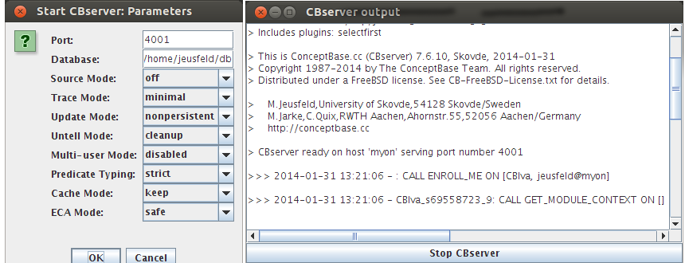
Figure 8.13: Start CBserver dialog and CBserver output window
Next we establish a connection between the ConceptBas.cc server and the user client CBIva. This is done by choosing the option Connect from the File menu of CBIva. An interaction window appears (see Figure 8.14) querying for the host name and the port number of the server (i.e. the number we have specified within the command cbserver -port 4001 -d test).
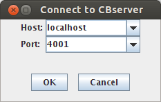
Figure 8.14: The connect-to-server dialog
The objects manipulated by ConceptBase.cc are persistently stored in a collection of external files, which reside in a directory called application or database10. The actual directory name of the database is supplied as the -d parameter of the command CBserver.
The -u parameter of the CBserver specifies whether updates are made persistent or are just kept in system memory temporarily. Use -u persistent for a update persistence or -u nonpersistent for a non persistent update mode 11.
The database can be modified interactively using the editor commands TELL/UNTELL. Another way of extending ConceptBase.cc databases is to load Telos objects (expressed in frame syntax) stored in plain text files with the extension *.sml. Call the menu item Load Model from the File Menu to add these objects to the database. In our example the database (directory) Employee was built interactively and can be found together with files containing the frames constituting the example in the directory
where you have to replace CB_HOME with the ConceptBase installation directory. The following files contain the objects of the Employee example expressed in frame syntax: Employee_Classes.sml, Employee_Instances.sml, Employee_Queries.sml. An alternative to interactively building a database is to start the server with an empty database (-d ⟨ newfile⟩ ) and then add the objects in these files by using Load Model. Note, that the *.sml extension may be omitted. During the load operation of external models, ConceptBase checks for syntactical and semantical correctness and reports all errors to the history window as it is done when updating the object base interactively using the editor. This protocol field collects all operations and errors reported since the beginning of the session.
To display all instances of an object, e.g. the class Employee, we invoke the Display Instance facility by selecting the item Display Instances from the menu bar. In the interaction window we specify Employee as object name. The instances of the class Employee are then displayed (see Figure 8.15).
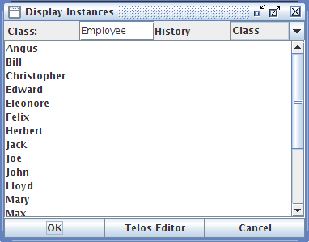
Figure 8.15: Display of Employee instances
After selecting a displayed instance we can load the frame representation of an instance to the Telos Editor or display further instances.
The Graph Editor is the preferred tool for browsing the objects managed by a CBserver. CBGraph is started by using the menu item “Graph Editor” from the “Browse” menu of CBIva. Select Employee as the initial object to be shown in CBGraph. After starting CBGraph, it will open an internal frame, connect it with the current server, and load the Employee object.
The CBGraph Editor (described in detail in section 8.2) allows you to display arbitrary objects from the current onceptBase server. Then, we select the Employee object and choose the Sub classes option from the context menu available via the right mouse-button. We choose to only display explicit subclasses from the submenu and select the Manager object. The displayed graph is now expanded (figure 8.16).
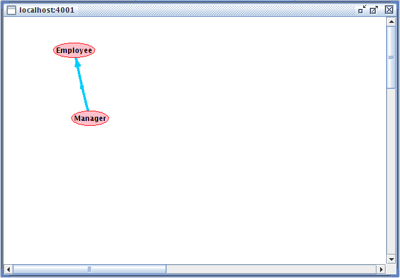
Figure 8.16: The resulting graph after expanding the node Employee with subclasses
Now we expand the node Manager, a subclass of Employee, by choosing the menu item Instances from the popup menu for Manager. We select the menu item “Show all” to display all instances of Manager. The resulting graph is shown in figure 8.17.
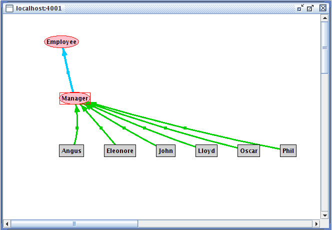
Figure 8.17: The resulting graph after expanding with the instances of Manager
Note that different object types are represented by different graphical objects. The instances of Manager are shown only as grey rectangles, because they are normal individual objects. The nodes Manager, Salesman, Employee etc. are shown as ovals, since these nodes are instances of the system class SimpleClass (see for a full description of graphical object semantics: Appendix C).
One can move nodes and links by selecting a node or a link and then holding down the left mouse button while moving the cursor to a different position. When the button is released the selected object will be located at the current position and the related links are redisplayed. Selection and movement of multiple nodes and links is also possible. Nodes and linkes are selected by clicking on its label, e.g. Manager in figure 8.17. Some links like the blue specialization link in the figure have no label. Then one can select the link by clicking on the small square dot in the middle of the link. This square dot is by default invisible. It becomes visible when you click on any other node or link label in the graph, e.g. on Manager.
We can further experiment with CBGraph by showing the classes and attributes of Employee. The classes of Employee are shown by selecting “Instance of” from the popup menu. Attributes of an object can be shown by selecting “Outgoing attributes” from the menu. The next submenu will show all attribute classes that apply for the current object. In our example, Employee is an instance of Class. Therefore, it has the attribute classes constraint, rule, and mrule (see figure 8.18). The attribute class Attribute applies to all objects as in Telos any kind of object can have an attribute. Furthermore, all attributes of an object are member of the attribute class Attribute. As we want to see all attributes, we select this attribute class and select “Show all” from the next submenu. All attributes and their values will be shown in CBGraph.
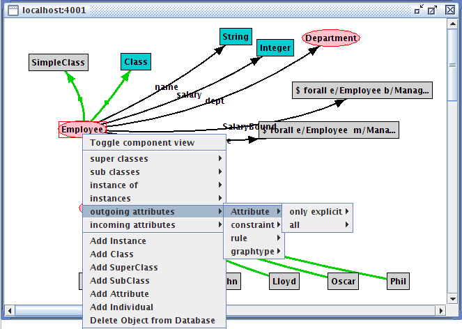
Figure 8.18: The graph after expanding it with the classes and the attributes of the class Employee
CBGraph can also show implicit relationships between objects,
e.g. relationships deduced by rules or the Telos axioms.
For example, if we select the object John and select “Instance of”
from the popup menu, we can display the implicit classes of John
by selecting “All” from the next submenu. As John is an instance of
Manager and Manager is a subclass of Employee, John is also an instance
of Employee. As there is no explicit object John->Employee,
the instantiation link between John and Employee will be represented as
an implicit link, i.e. a dashed line (see figure 8.19).
The same applies also to attribute links. For example, the employee Herbert has an implicit boss-attribute to Phil. This can be shown by selecting “Outgoing attributes” → “boss” → “All” → “Phil” from the popup menu. Note, that the submenu “All” for the attribute class Attribute will be always empty as only explicit attributes can be displayed in this category.
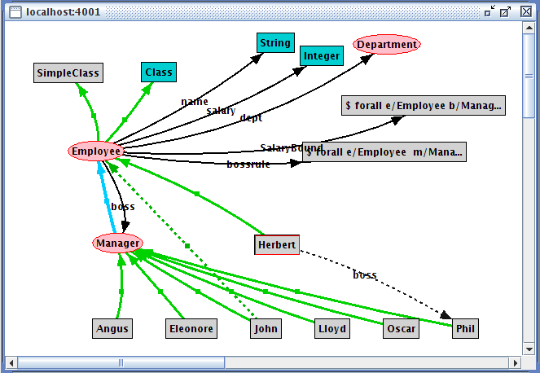
Figure 8.19: The graph showing implicit instantiation and attribute links
Before we are able to edit a Telos object, we have to load its frame representation in to the Telos Editor field first. For loading a Telos object to the Editor field, we choose the Telos Editor Button from either the Display Queries oder Display Instances Browsing facilities or the Load Frame button from the ConceptBaseWorkbench window (see Figure 8.20).
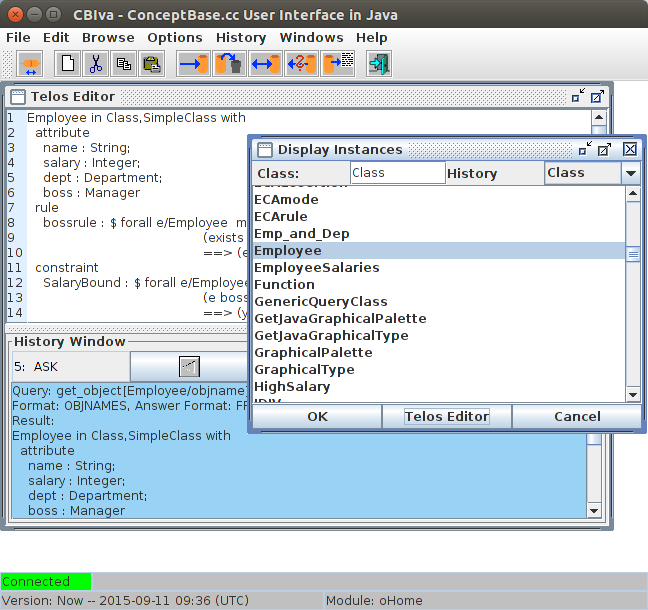
Figure 8.20: The TelosEditor Field with the object Employee
Now we add an additional attribute, e.g. education, to the class Employee (for the description of the Telos syntax see Appendix A). We have added the line education : String as shown in figure 8.21. To demonstrate error reports from the ConceptBase.cc user interface and how to correct them, we have made mistakes in the syntax notation of the added attribute.
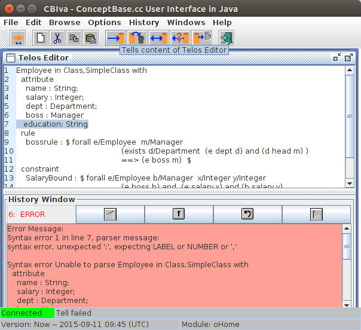
Figure 8.21: Trying to add an attribute to the class Employee with the resulting error report
By clicking the left mouse button on the Tell icon, the content of the editor is told to the ConceptBase server. Syntactical and semantical correctness is checked and the detected errors are reported to the Protocol field. The report resulting from our mistakes by specifying the new attribute is also shown in figure 8.21. Note, that this syntax error would have been already detected at the client side without interaction with the server if we would have enabled the option “Pre-parse Telos Frames” in the options menu.
We correct the error by adding a semicolon to the previous line and choose the Tell symbol again. This time, since there are no further mistakes, the additional attribute is added to the class Employee.
Now we can choose again the item Outgoing Attributes from the popup of the Graph Editor window for the node Employee. If we select “Show all” attributes of the attribute class “Attribute” the new attribute will NOT be shown. CBGraph uses an internal cache which will only be updated on request. Therefore, we select the object Employee and select “Validate and update selected objects” from the menu “Current connection”. The cache for the object Employee will be emptied. Now, showing all attributes should add the new attribute education to the graph.
Telos objects can also be edited graphically in CBGraph. In our example, we want to add another attribute named address to the class Employee. The attribute destination of this attribute should be a new class called Address.
First, we select the object Employee and click on the “Create Attribute” button in the tool bar or select “Add Attribute” operation from the tool bar. As we have selected the Employee object, it should be already inserted as source of the attribute. We have to type the label (address) and the destination of the attribute in the text fields (see figure 8.22). As this attribute does not belong to a specific attribute category (it is just an attribute), we do not have to specify an attribute class.
By clicking on the Ok button, CBGraph will create a new object for Address represented by the default graphical type (a gray box). Then, it will create the attribute link from Employee to Address with the label address. The result is shown in figure 8.23.
Now, we want to declare Address as an instance of Class. Therefore, we select Address, hold down the Shift-key and select Class. Both objects should be selected now. We click on the “Create Instantiation” button and a dialog as shown in figure 8.23 should appear.
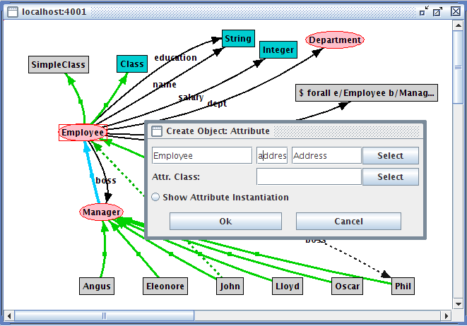
Figure 8.22: Adding an attribute to Employee
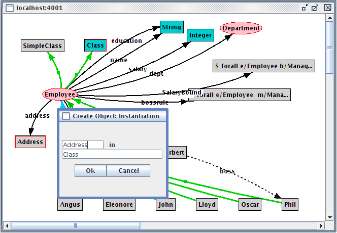
Figure 8.23: Adding an instantiation link between Address and Class
As we have selected the objects in the correct way, the dialog already specifies the object we want to create (Address in Class) and we can click directly on Ok. The new instantiation link will be added to the graph.
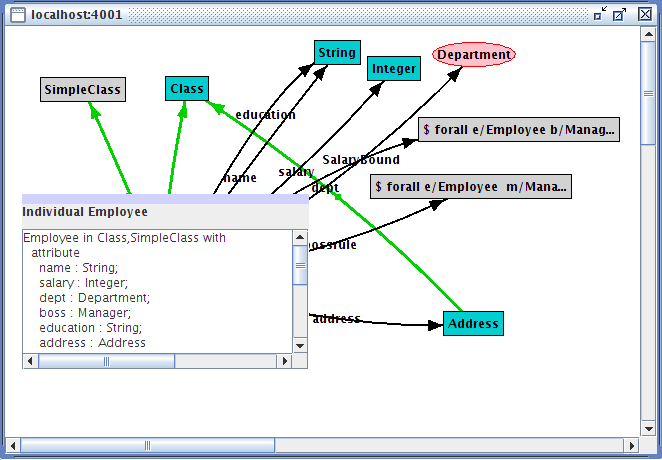
Figure 8.24: The resulting graph after commit
Now, we are satisfied with our changes and want to commit them in the server. So far, the changes have been stored in an internal buffer of CBGraph and have not been sent to the server. We click on the “Commit” button in the upper right corner. CBGraph generates now Telos frames for the added objects and sends them to the server. If we did not make an error, all changes should be consistent and accepted by the server. This is shown by the appearing message box “Changes committed”. If an error occurs, an error message will displayed instead. The graphical editing is an alternative to the textual editing via the Telos Editor. It is appropriate for incremental changes to a model. Larger changes should better be made via the Telos Editor or even to an external text file that is loaded via the File / Load Model facility of CBIva. If the changes were successfully told to the CBserver, CBGraph reloads the information of every visible object. In particular, the graphical types of the objects will be updated. As the object Address is declared as instance of Class, it will get the graphical type of a class, i.e. a turquoise box. The result is shown in figure 8.24. The object Employee is shown in the detailed component view, in this case the frame representation of the object is shown. As you can see, the attribute address is now also visible in the frame representation.
Lets assume that we need to ask the server for all Employees working for Angus. We open a new Telos Editor (see menu item Browse). Then, we define a new query class (AngusEmployees) as follows:
AngusEmployees in QueryClass isA Employee with
constraint
c: $ (this boss Angus) $
end
We can tell this query, so that it is stored in ConceptBase.cc and we can reuse it later, or we can just ask the query, i.e. the query will told temporarily and evaluated. If we ask the query, the answer is displayed in the Telos Editor field as well as in the history window. Figure 8.25 shows the CBIva with the query class and the answer.
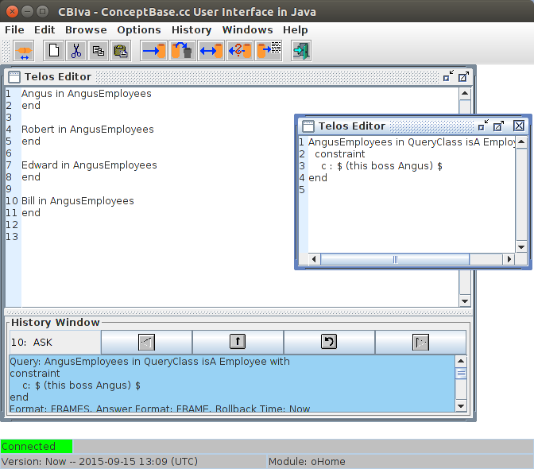
Figure 8.25: Query class and its answer
We can also execute this query from CBGraph. From the menu “Current connection” we select “Query to server”. A dialog we ask for the name of query class. If we have told the example query, we can type AngusEmployees in the text field and hit on the “Submit Query”. The query will be evaluated and the objects in the result will be shown in the list box. We can select the objects which should be added to the graph (multiple selection with the Shift-key is possible) and click on the “Show objects” button. The selected objects will be added to the graph, however with no connection to existing objects.
The configuration options are stored in a file “.CBjavaInterface” in
the home directory of the user. The settings are stored automatically on exit.
You can edit the file manually with a normal text editor. It contains
name-value pairs in the format variable=value. All variables
can also be modified CBIva via the "Options" menu.
frame” or “tree”).